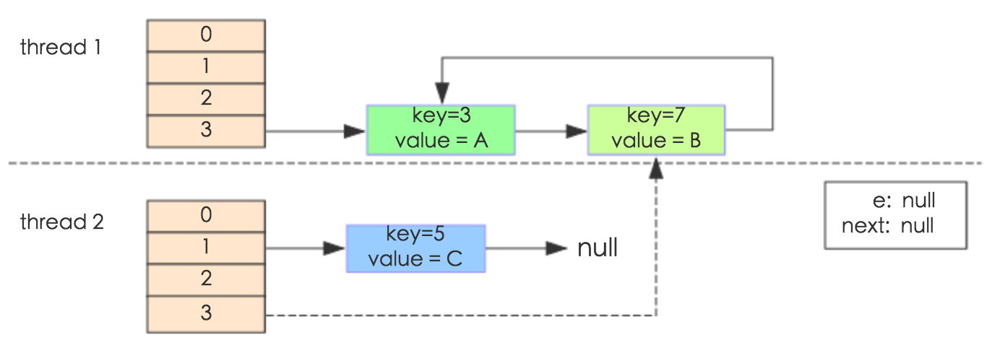

<!DOCTYPE html><html lang="zh-CN" data-theme="light"><head><meta charset="UTF-8"><meta http-equiv="X-UA-Compatible" content="IE=edge"><meta name="viewport" content="width=device-width,initial-scale=1"><title>HashMap原理解析 | 王菜花</title><meta name="description" content="HashMap 是我们使用频率最高的集合之一。它是用于映射(键值对)处理的数据类型。随着 JDK 版本的更新，JDK1.8 对 HashMap 底层的实现进行了优化，例如引入红黑树的数据结构。 本文将深入探讨 HashMap 的结构实现和功能原理。 基本特点HashMap 你应该也很熟悉。我在这就简单说一下它的基本特点，  HashMap是基于哈希表的 Map 接口的实现。 允许 null 键和"><meta name="keywords" content="Android,HashMap"><meta name="author" content="王菜花"><meta name="copyright" content="王菜花"><meta name="format-detection" content="telephone=no"><link rel="shortcut icon" href="/img/favicon.png"><meta http-equiv="Cache-Control" content="no-transform"><meta http-equiv="Cache-Control" content="no-siteapp"><link rel="preconnect" href="//cdn.jsdelivr.net"/><link rel="dns-prefetch" href="//cdn.jsdelivr.net"/><link rel="preconnect" href="https://www.google-analytics.com" crossorigin="crossorigin"/><link rel="dns-prefetch" href="https://www.google-analytics.com"/><link rel="preconnect" href="https://hm.baidu.com"/><link rel="dns-prefetch" href="https://hm.baidu.com"/><link rel="preconnect" href="http://ta.qq.com"/><link rel="dns-prefetch" href="http://ta.qq.com"/><link rel="preconnect" href="https://fonts.googleapis.com" crossorigin="crossorigin"/><link rel="dns-prefetch" href="https://fonts.googleapis.com"/><link rel="preconnect" href="//busuanzi.ibruce.info"/><link rel="dns-prefetch" href="//busuanzi.ibruce.info"/><meta name="google-site-verification" content="8rT_m42DeCHfEM_ygBo-FDkM6yBMunc2qHwc8ivvRmw"/><meta name="twitter:card" content="summary"><meta name="twitter:title" content="HashMap原理解析"><meta name="twitter:description" content="HashMap 是我们使用频率最高的集合之一。它是用于映射(键值对)处理的数据类型。随着 JDK 版本的更新，JDK1.8 对 HashMap 底层的实现进行了优化，例如引入红黑树的数据结构。 本文将深入探讨 HashMap 的结构实现和功能原理。 基本特点HashMap 你应该也很熟悉。我在这就简单说一下它的基本特点，  HashMap是基于哈希表的 Map 接口的实现。 允许 null 键和"><meta name="twitter:image" content="https://wx1.sinaimg.cn/mw690/a5cc21e7ly1ggpbuhx9uij20zk0m8n0v.jpg"><meta property="og:type" content="article"><meta property="og:title" content="HashMap原理解析"><meta property="og:url" content="http://caihuasay.com/posts/HashMap_Analysis.html"><meta property="og:site_name" content="王菜花"><meta property="og:description" content="HashMap 是我们使用频率最高的集合之一。它是用于映射(键值对)处理的数据类型。随着 JDK 版本的更新，JDK1.8 对 HashMap 底层的实现进行了优化，例如引入红黑树的数据结构。 本文将深入探讨 HashMap 的结构实现和功能原理。 基本特点HashMap 你应该也很熟悉。我在这就简单说一下它的基本特点，  HashMap是基于哈希表的 Map 接口的实现。 允许 null 键和"><meta property="og:image" content="https://wx1.sinaimg.cn/mw690/a5cc21e7ly1ggpbuhx9uij20zk0m8n0v.jpg"><meta property="article:published_time" content="2020-05-07T02:56:08.000Z"><meta property="article:modified_time" content="2020-07-13T06:27:42.702Z"><script src="https://cdn.jsdelivr.net/npm/js-cookie/dist/js.cookie.min.js"></script><script>var autoChangeMode = '1'
var t = Cookies.get("theme")
if (autoChangeMode == '1'){
  var isDarkMode = window.matchMedia("(prefers-color-scheme: dark)").matches
  var isLightMode = window.matchMedia("(prefers-color-scheme: light)").matches
  var isNotSpecified = window.matchMedia("(prefers-color-scheme: no-preference)").matches
  var hasNoSupport = !isDarkMode && !isLightMode && !isNotSpecified

  if (t === undefined){
    if (isLightMode) activateLightMode()
    else if (isDarkMode) activateDarkMode()
    else if (isNotSpecified || hasNoSupport){
      console.log('You specified no preference for a color scheme or your browser does not support it. I Schedule dark mode during night time.')
      var now = new Date()
      var hour = now.getHours()
      var isNight = hour < 6 || hour >= 18
      isNight ? activateDarkMode() : activateLightMode()
  }
  } else if (t == 'light') activateLightMode()
  else activateDarkMode()

} else if (autoChangeMode == '2'){
  now = new Date();
  hour = now.getHours();
  isNight = hour < 6 || hour >= 18
  if(t === undefined) isNight? activateDarkMode() : activateLightMode()
  else if (t === 'light') activateLightMode()
  else activateDarkMode() 
} else {
  if ( t == 'dark' ) activateDarkMode()
  else if ( t == 'light') activateLightMode()
}

function activateDarkMode(){
  document.documentElement.setAttribute('data-theme', 'dark')
  if (document.querySelector('meta[name="theme-color"]') !== null){
    document.querySelector('meta[name="theme-color"]').setAttribute('content','#000')
  }
}
function activateLightMode(){
  document.documentElement.setAttribute('data-theme', 'light')
  if (document.querySelector('meta[name="theme-color"]') !== null){
  document.querySelector('meta[name="theme-color"]').setAttribute('content','#fff')
  }
}</script><link rel="stylesheet" href="/css/index.css"><link rel="stylesheet" href="https://cdn.jsdelivr.net/npm/font-awesome@latest/css/font-awesome.min.css"><link rel="stylesheet" href="https://cdn.jsdelivr.net/npm/@fancyapps/fancybox@latest/dist/jquery.fancybox.min.css"><link rel="canonical" href="http://caihuasay.com/posts/HashMap_Analysis.html"><link rel="prev" title="如何做到在子线程更新 UI？" href="http://caihuasay.com/posts/thread_update_ui.html"><link rel="next" title="HTTP 协议完全解析" href="http://caihuasay.com/posts/http_analysis.html"><script>var _hmt = _hmt || [];
(function() {
  var hm = document.createElement("script");
  hm.src = "https://hm.baidu.com/hm.js?2610cb269f76b6318e187f0a332e3bd3";
  var s = document.getElementsByTagName("script")[0]; 
  s.parentNode.insertBefore(hm, s);
})();
</script><script>(function(i,s,o,g,r,a,m){i['GoogleAnalyticsObject']=r;i[r]=i[r]||function(){
(i[r].q=i[r].q||[]).push(arguments)},i[r].l=1*new Date();a=s.createElement(o),
m=s.getElementsByTagName(o)[0];a.async=1;a.src=g;m.parentNode.insertBefore(a,m)
})(window,document,'script','https://www.google-analytics.com/analytics.js','ga');

ga('create', 'UA-103062783-1', 'auto');
ga('send', 'pageview');
</script><script src="https://tajs.qq.com/stats?sId=66551853" charset="UTF-8"></script><link rel="stylesheet" href="https://fonts.googleapis.com/css?family=Titillium+Web"><script>var GLOBAL_CONFIG = { 
  root: '/',
  algolia: undefined,
  localSearch: {"path":"search.xml","languages":{"hits_empty":"找不到您查询的内容:${query}"}},
  translate: {"defaultEncoding":2,"translateDelay":0,"cookieDomain":"https://xxx/","msgToTraditionalChinese":"繁","msgToSimplifiedChinese":"簡"},
  copy: {
    success: '复制成功',
    error: '复制错误',
    noSupport: '浏览器不支持'
  },
  bookmark: {
    message_prev: '按',
    message_next: '键将本页加入书签'
  },
  runtime_unit: '天',
  runtime: true,
  copyright: undefined,
  ClickShowText: undefined,
  medium_zoom: false,
  fancybox: true,
  Snackbar: undefined,
  baiduPush: false,
  highlightCopy: true,
  highlightLang: true,
  highlightShrink: 'false',
  isFontAwesomeV5: false,
  isPhotoFigcaption: false,
  islazyload: false,
  isanchor: false
  
}</script><script>var GLOBAL_CONFIG_SITE = { 
  isPost: true,
  isHome: false,
  isSidebar: true  
  }</script><noscript><style>
#page-header {
  opacity: 1
}
.justified-gallery img{
  opacity: 1
}
</style></noscript><meta name="generator" content="Hexo 4.2.0"></head><body><div id="mobile-sidebar"><div id="menu_mask"></div><div id="mobile-sidebar-menus"><div class="mobile_author_icon"></div><div class="mobile_post_data"><div class="mobile_data_item is-center"><div class="mobile_data_link"><a href="/archives/"><div class="headline">文章</div><div class="length_num">9</div></a></div></div><div class="mobile_data_item is-center">      <div class="mobile_data_link"><a href="/tags/"><div class="headline">标签</div><div class="length_num">7</div></a></div></div><div class="mobile_data_item is-center">     <div class="mobile_data_link"><a href="/categories/"><div class="headline">分类</div><div class="length_num">4</div></a></div></div></div><hr/><div class="menus_items"><div class="menus_item"><a class="site-page" href="/"><i class="fa-fw fa fa-home"></i><span> 首页</span></a></div><div class="menus_item"><a class="site-page" href="/archives/"><i class="fa-fw fa fa-archive"></i><span> 时间轴</span></a></div><div class="menus_item"><a class="site-page" href="/tags/"><i class="fa-fw fa fa-tags"></i><span> 标签</span></a></div><div class="menus_item"><a class="site-page" href="/categories/"><i class="fa-fw fa fa-folder-open"></i><span> 分类</span></a></div><div class="menus_item"><a class="site-page"><i class="fa-fw fa fa-list" aria-hidden="true"></i><span> 娱乐</span><i class="fa fa-chevron-down menus-expand" aria-hidden="true"></i></a><ul class="menus_item_child"><li><a class="site-page" href="/music/"><i class="fa-fw fa fa-music"></i><span> 音乐</span></a></li><li><a class="site-page" href="/movies/"><i class="fa-fw fa fa-film"></i><span> 电影</span></a></li></ul></div><div class="menus_item"><a class="site-page" href="/about/"><i class="fa-fw fa fa-heart"></i><span> 关于我</span></a></div></div></div></div><i class="fa fa-arrow-right on" id="toggle-sidebar" aria-hidden="true">     </i><div id="sidebar"><div class="sidebar-toc"><div class="sidebar-toc__title">目录</div><div class="sidebar-toc__progress"><span class="progress-notice">你已经读了</span><span class="progress-num">0</span><span class="progress-percentage">%</span><div class="sidebar-toc__progress-bar">     </div></div><div class="sidebar-toc__content"><ol class="toc"><li class="toc-item toc-level-2"><a class="toc-link" href="#基本特点"><span class="toc-number">1.</span> <span class="toc-text">基本特点</span></a></li><li class="toc-item toc-level-2"><a class="toc-link" href="#存储结构"><span class="toc-number">2.</span> <span class="toc-text">存储结构</span></a><ol class="toc-child"><li class="toc-item toc-level-3"><a class="toc-link" href="#HashMap-数据底层具体存储的是什么？"><span class="toc-number">2.1.</span> <span class="toc-text">HashMap 数据底层具体存储的是什么？</span></a></li><li class="toc-item toc-level-3"><a class="toc-link" href="#Map-为什么要用数组-单链表的方式？"><span class="toc-number">2.2.</span> <span class="toc-text">Map 为什么要用数组+单链表的方式？</span></a><ol class="toc-child"><li class="toc-item toc-level-4"><a class="toc-link" href="#为什么转成红黑树就能提高性能呢？"><span class="toc-number">2.2.1.</span> <span class="toc-text">为什么转成红黑树就能提高性能呢？</span></a></li></ol></li></ol></li><li class="toc-item toc-level-2"><a class="toc-link" href="#HashMap-的成员变量"><span class="toc-number">3.</span> <span class="toc-text">HashMap 的成员变量</span></a></li><li class="toc-item toc-level-2"><a class="toc-link" href="#确定数组索引位置的-hash-算法"><span class="toc-number">4.</span> <span class="toc-text">确定数组索引位置的 hash 算法</span></a><ol class="toc-child"><li class="toc-item toc-level-3"><a class="toc-link" href="#为什么要采用这种算法呢？"><span class="toc-number">4.1.</span> <span class="toc-text">为什么要采用这种算法呢？</span></a></li></ol></li><li class="toc-item toc-level-2"><a class="toc-link" href="#存储数据的-put-方法"><span class="toc-number">5.</span> <span class="toc-text">存储数据的 put 方法</span></a><ol class="toc-child"><li class="toc-item toc-level-4"><a class="toc-link" href="#番外：-为什么用-amp-操作呢？"><span class="toc-number">5.0.1.</span> <span class="toc-text">番外： 为什么用 &amp; 操作呢？</span></a></li><li class="toc-item toc-level-4"><a class="toc-link" href="#为什么可以使用位运算-amp-来实现取模运算-呢"><span class="toc-number">5.0.2.</span> <span class="toc-text">为什么可以使用位运算(&amp;)来实现取模运算(%)呢</span></a></li></ol></li></ol></li><li class="toc-item toc-level-2"><a class="toc-link" href="#HashMap-的扩容机制"><span class="toc-number">6.</span> <span class="toc-text">HashMap 的扩容机制</span></a></li><li class="toc-item toc-level-2"><a class="toc-link" href="#为什么HashMap线程不安全"><span class="toc-number">7.</span> <span class="toc-text">为什么HashMap线程不安全?</span></a></li><li class="toc-item toc-level-2"><a class="toc-link" href="#参考"><span class="toc-number">8.</span> <span class="toc-text">参考</span></a></li></ol></div></div></div><div id="body-wrap"><div class="post-bg" id="nav" style="background-image: url(https://wx1.sinaimg.cn/mw690/a5cc21e7ly1ggpbuhx9uij20zk0m8n0v.jpg)"><div id="page-header"><span class="pull_left" id="blog_name"><a class="blog_title" id="site-name" href="/">王菜花</a></span><span class="pull_right menus"><div id="search_button"><a class="site-page social-icon search"><i class="fa fa-search fa-fw"></i><span> 搜索</span></a></div><div class="menus_items"><div class="menus_item"><a class="site-page" href="/"><i class="fa-fw fa fa-home"></i><span> 首页</span></a></div><div class="menus_item"><a class="site-page" href="/archives/"><i class="fa-fw fa fa-archive"></i><span> 时间轴</span></a></div><div class="menus_item"><a class="site-page" href="/tags/"><i class="fa-fw fa fa-tags"></i><span> 标签</span></a></div><div class="menus_item"><a class="site-page" href="/categories/"><i class="fa-fw fa fa-folder-open"></i><span> 分类</span></a></div><div class="menus_item"><a class="site-page"><i class="fa-fw fa fa-list" aria-hidden="true"></i><span> 娱乐</span><i class="fa fa-chevron-down menus-expand" aria-hidden="true"></i></a><ul class="menus_item_child"><li><a class="site-page" href="/music/"><i class="fa-fw fa fa-music"></i><span> 音乐</span></a></li><li><a class="site-page" href="/movies/"><i class="fa-fw fa fa-film"></i><span> 电影</span></a></li></ul></div><div class="menus_item"><a class="site-page" href="/about/"><i class="fa-fw fa fa-heart"></i><span> 关于我</span></a></div></div><span class="toggle-menu close"><a class="site-page"><i class="fa fa-bars fa-fw" aria-hidden="true"></i></a></span></span></div><div id="post-info"><div id="post-title"><div class="posttitle">HashMap原理解析</div></div><div id="post-meta"><div class="meta-firstline"><time class="post-meta__date"><span class="post-meta__date-created" title="发表于 2020-05-07 10:56:08"><i class="fa fa-calendar" aria-hidden="true"></i> 发表于 2020-05-07</span><span class="post-meta__separator">|</span><span class="post-meta__date-updated" title="更新于 2020-07-13 14:27:42"><i class="fa fa-history" aria-hidden="true"></i> 更新于 2020-07-13</span></time><span class="post-meta__categories"><span class="post-meta__separator">|</span><i class="fa fa-inbox post-meta__icon" aria-hidden="true"></i><a class="post-meta__categories" href="/categories/Android/">Android</a></span></div><div class="meta-secondline"> <span class="post-meta-wordcount"><i class="post-meta__icon fa fa-file-word-o" aria-hidden="true"></i><span>字数总计:</span><span class="word-count">3.7k</span><span class="post-meta__separator">|</span><i class="post-meta__icon fa fa-clock-o" aria-hidden="true"></i><span>阅读时长: 13 分钟</span></span></div><div class="meta-thirdline"><span class="post-meta-pv-cv"><span class="post-meta__separator">|</span><i class="fa fa-eye post-meta__icon" aria-hidden="true"> </i><span>阅读量:</span><span id="busuanzi_value_page_pv"></span></span><span class="post-meta-commentcount"></span></div></div></div></div><main class="layout_post" id="content-inner"><article id="post"><div class="post-content" id="article-container"><p>HashMap 是我们使用频率最高的集合之一。它是用于映射(键值对)处理的数据类型。随着 JDK 版本的更新，JDK1.8 对 HashMap 底层的实现进行了优化，例如引入红黑树的数据结构。</p>
<p>本文将深入探讨 HashMap 的结构实现和功能原理。</p>
<h2 id="基本特点"><a href="#基本特点" class="headerlink" title="基本特点"></a>基本特点</h2><p>HashMap 你应该也很熟悉。我在这就简单说一下它的基本特点，</p>
<ul>
<li>HashMap是基于哈希表的 Map 接口的实现。</li>
<li>允许 null 键和 null 值，最多只允许一条记录的键为 null，允许多条记录的值为 null。</li>
<li>不保证映射的顺序。特别是，<strong>它不能保证顺序会随着时间的推移保持恒定</strong>。</li>
<li>HashMap 根据键的 hashCode 值存储数据，大多数情况下可以直接定位到它的值，因而具有很快的访问速度 O(1)。</li>
</ul>
<h2 id="存储结构"><a href="#存储结构" class="headerlink" title="存储结构"></a>存储结构</h2><p>从结构实现来讲，HashMap 是数组+链表+红黑树（JDK1.8增加了红黑树部分）实现的。</p>
<p></p>
<h3 id="HashMap-数据底层具体存储的是什么？"><a href="#HashMap-数据底层具体存储的是什么？" class="headerlink" title="HashMap 数据底层具体存储的是什么？"></a>HashMap 数据底层具体存储的是什么？</h3><p>通过查看 HashMap 的源码，它其中有一个非常重要的字段 <code>Node&lt;K,V&gt;[] table</code>，即哈希桶数组，是一个Node 的数组。</p>
<figure class="highlight java"><table><tr><td class="code"><pre><span class="line"><span class="keyword">static</span> <span class="class"><span class="keyword">class</span> <span class="title">Node</span>&lt;<span class="title">K</span>,<span class="title">V</span>&gt; <span class="keyword">implements</span> <span class="title">Map</span>.<span class="title">Entry</span>&lt;<span class="title">K</span>,<span class="title">V</span>&gt; </span>&#123;</span><br><span class="line">        <span class="keyword">final</span> <span class="keyword">int</span> hash;<span class="comment">// 用来定位数组索引位置</span></span><br><span class="line">        <span class="keyword">final</span> K key; <span class="comment">// 用来存储的 key</span></span><br><span class="line">        V value; <span class="comment">// 存储的 value</span></span><br><span class="line">        Node&lt;K,V&gt; next;<span class="comment">// 链表的下一个元素</span></span><br><span class="line"></span><br><span class="line">        Node(<span class="keyword">int</span> hash, K key, V value, Node&lt;K,V&gt; next) &#123;...&#125;</span><br><span class="line"></span><br><span class="line">        <span class="function"><span class="keyword">public</span> <span class="keyword">final</span> K <span class="title">getKey</span><span class="params">()</span>        </span>&#123;...&#125;</span><br><span class="line">        <span class="function"><span class="keyword">public</span> <span class="keyword">final</span> V <span class="title">getValue</span><span class="params">()</span>      </span>&#123;...&#125;</span><br><span class="line">        <span class="function"><span class="keyword">public</span> <span class="keyword">final</span> String <span class="title">toString</span><span class="params">()</span> </span>&#123;...&#125;</span><br><span class="line">        <span class="function"><span class="keyword">public</span> <span class="keyword">final</span> <span class="keyword">int</span> <span class="title">hashCode</span><span class="params">()</span> </span>&#123;...&#125;</span><br><span class="line">        <span class="function"><span class="keyword">public</span> <span class="keyword">final</span> V <span class="title">setValue</span><span class="params">(V newValue)</span> </span>&#123;...&#125;</span><br><span class="line">        <span class="function"><span class="keyword">public</span> <span class="keyword">final</span> <span class="keyword">boolean</span> <span class="title">equals</span><span class="params">(Object o)</span> </span>&#123;...&#125;</span><br><span class="line">&#125;</span><br></pre></td></tr></table></figure>

<p>Node 是 HashMap 中的一个内部类，实现了 Map.Entry 接口，本质是就是一个映射(键值对)。</p>
<p>我们在 HashMap 中存储的每一个值，都是一个 Node。</p>
<h3 id="Map-为什么要用数组-单链表的方式？"><a href="#Map-为什么要用数组-单链表的方式？" class="headerlink" title="Map 为什么要用数组+单链表的方式？"></a>Map 为什么要用数组+单链表的方式？</h3><p>任何哈希函数基本都无法彻底避免碰撞，常见的解决碰撞的方法有以下几种：</p>
<ul>
<li><p>开放寻址法：如果出现了散列冲突，就重新探测一个空闲位置，将其插入。</p>
</li>
<li><p>链表法：就是数组加链表的结合。在每个数组元素上都一个链表结构，当数据被 Hash 后，得到数组下标，把数据放在对应下标元素的链表上。</p>
</li>
<li><p>再哈希法：当哈希地址发生冲突用其他的函数计算另一个哈希函数地址，直到冲突不再产生为止。</p>
</li>
<li><p>建立公共溢出区：将哈希表分为基本表和溢出表两部分，发生冲突的元素都放入溢出表中。</p>
</li>
</ul>
<p>HashMap 采用的就是<strong>链表法</strong>这种方式。 但即使负载因子和 Hash 算法设计的再合理，也免不了会出现拉链过长的情况，<strong>一旦出现拉链过长，则会严重影响 HashMap 的性能。</strong></p>
<p>于是，在 JDK1.8 版本中，HashMap 做了进一步的优化，引入了红黑树。当链表长度太长（默认超过8）时，链表就转换为红黑树，利用红黑树快速增删改查的特点提高 HashMap 的性能。</p>
<h4 id="为什么转成红黑树就能提高性能呢？"><a href="#为什么转成红黑树就能提高性能呢？" class="headerlink" title="为什么转成红黑树就能提高性能呢？"></a>为什么转成红黑树就能提高性能呢？</h4><p>虽然链表的删除和插入的速度很快，但是查找的速度很慢，需要从头遍历整个链表，时间复杂度为 O(n)，删除和插入的前提是<strong>首先要找到整个元素</strong>，因此也会受到链表长度的影响。当链表过长时，增删改查速度就会降低。</p>
<p>红黑树是一种平衡二叉树，它的增删改查的时间复杂度是 O(logn)。</p>
<h2 id="HashMap-的成员变量"><a href="#HashMap-的成员变量" class="headerlink" title="HashMap 的成员变量"></a>HashMap 的成员变量</h2><p>HashMap 中的成员变量，除了一些常量外，主要有以下几个。</p>
<figure class="highlight java"><table><tr><td class="code"><pre><span class="line"><span class="keyword">int</span> size; <span class="comment">// 集合大小</span></span><br><span class="line"><span class="keyword">int</span> modCount; <span class="comment">// 内部发生变化的次数</span></span><br><span class="line"><span class="keyword">final</span> <span class="keyword">float</span> loadFactor; <span class="comment">// 负载因子</span></span><br><span class="line"><span class="keyword">int</span> threshold; <span class="comment">// 阈值</span></span><br></pre></td></tr></table></figure>

<p>size 比较简单，就是 HashMap 中包含的映射的总数。</p>
<p>modCount，主要用来记录 HashMap 内部结构发生变化的次数，主要用于迭代的快速失败。强调一点，<strong>内部结构发生变化指的是结构发生变化</strong>，例如 put 新键值对，但是某个 key 对应的 value 值被覆盖不属于结构变化。</p>
<p>loadFactor 负载因子，默认值是0.75，负载因子越大，说明 Map 中的元素越多，空闲位置越少，散列冲突的概率就越大。</p>
<p>threshold 阈值，是 HashMap 所能容纳的最大数据量的 Node (键值对)个数。</p>
<p>算法公式为：<code>threshold = length * loadFactor</code>。其中 length 是 Node[] table 的长度(默认 16)。</p>
<p>threshold 就是在此 loadFactor 和 length 对应下允许的最大元素数目，超过这个数目就重新 resize (扩容)，扩容后的 HashMap 容量是之前容量的两倍。</p>
<h2 id="确定数组索引位置的-hash-算法"><a href="#确定数组索引位置的-hash-算法" class="headerlink" title="确定数组索引位置的 hash 算法"></a>确定数组索引位置的 hash 算法</h2><p>不管是添加、删除还是查找，<strong>第一步首先是要确定当前元素在 HashMap 中的位置。</strong></p>
<p>HashMap 中的 hash 采用的是<strong>取 key 的 hashCode 值，然后进行高位运算，再进行取模运算。</strong></p>
<figure class="highlight java"><table><tr><td class="code"><pre><span class="line"><span class="function"><span class="keyword">static</span> <span class="keyword">final</span> <span class="keyword">int</span> <span class="title">hash</span><span class="params">(Object key)</span> </span>&#123;</span><br><span class="line">      <span class="keyword">int</span> h;</span><br><span class="line">      <span class="keyword">return</span> (key == <span class="keyword">null</span>) ? <span class="number">0</span> : (h = key.hashCode()) ^ (h &gt;&gt;&gt; <span class="number">16</span>);</span><br><span class="line">  &#125;</span><br></pre></td></tr></table></figure>

<h3 id="为什么要采用这种算法呢？"><a href="#为什么要采用这种算法呢？" class="headerlink" title="为什么要采用这种算法呢？"></a>为什么要采用这种算法呢？</h3><p>我们知道，在 HashMap 中采用 hash 为 key，因此我们要尽量避免 hash 碰撞。</p>
<p>上面的代码中，<code>key.hashCode()</code>函数调用的是 key 键值类型自带的哈希函数，返回 int 型的值。</p>
<p>int 值的取值范围在 <code>-2^31 ~ 2^31 - 1</code> 之间，大约有 40 亿的空间，如果直接拿散列表的值做数组的所含，虽然很难出现碰撞，但是 40 亿的长度实在是太大了，不太现实。</p>
<p>因此需要对得到的散列值进行进一步的操作处理。</p>
<p>java 8 采用 key.hashCode() 与 hash 值的高 16 位进行异或运算。</p>
<blockquote>
<p>异或：如果a、b两个值不相同，则异或结果为1。 如果a、b两个值相同，异或结果为0。</p>
</blockquote>
<p>为什么这里需要将高位数据移位到低位进行异或运算呢？</p>
<p>这是因为有些数据计算出的哈希值差异<strong>主要在高位</strong>，利用高半区和低半区做异或，就是为了<strong>混合原始哈希码的高位和低位，以此来加大低位的随机性</strong>。混合后的低位掺杂了高位的部分特征，这样高位的信息也被变相保留下来，可以有效避免类似情况下的哈希碰撞。</p>
<p></p>
<h2 id="存储数据的-put-方法"><a href="#存储数据的-put-方法" class="headerlink" title="存储数据的 put 方法"></a>存储数据的 put 方法</h2><p>HashMap 的 put 方法主要分为以下几步：</p>
<p>①. 判断键值对数组 table[i] 是否为空或为 null，否则执行 resize() 进行扩容；</p>
<p>②. 根据键值 key 计算 hash 值得到插入的数组索引 i，如果 table[i]==null，直接新建节点添加，转向 ⑥，如果 table[i] 不为空，转向③；</p>
<p>③. 判断 table[i] 的首个元素是否和 key 一样，如果相同直接覆盖 value，否则转向④，这里的相同指的是 hashCode 以及 equals；</p>
<p>④. 判断 table[i] 是否为 TreeNode，即 table[i] 是否是红黑树，如果是红黑树，则直接在树中插入键值对，否则转向⑤；</p>
<p>⑤. 遍历 table[i]，判断链表长度是否大于 8，大于 8 的话把链表转换为红黑树，在红黑树中执行插入操作，否则进行链表的插入操作；遍历过程中若发现 key 已经存在直接覆盖 value 即可；</p>
<p>⑥. 插入成功后，判断实际存在的键值对数量 size 是否超多了最大容量 threshold，如果超过，进行扩容。</p>
<p>JDK1.8HashMap的put方法源码如下:</p>
<figure class="highlight java"><table><tr><td class="code"><pre><span class="line"><span class="function"><span class="keyword">public</span> V <span class="title">put</span><span class="params">(K key, V value)</span> </span>&#123;</span><br><span class="line">    <span class="comment">// 对key的hashCode()做hash</span></span><br><span class="line">    <span class="keyword">return</span> putVal(hash(key), key, value, <span class="keyword">false</span>, <span class="keyword">true</span>);</span><br><span class="line">&#125;</span><br><span class="line"></span><br><span class="line"><span class="function"><span class="keyword">final</span> V <span class="title">putVal</span><span class="params">(<span class="keyword">int</span> hash, K key, V value, <span class="keyword">boolean</span> onlyIfAbsent,</span></span></span><br><span class="line"><span class="function"><span class="params">                <span class="keyword">boolean</span> evict)</span> </span>&#123;</span><br><span class="line">    Node&lt;K, V&gt;[] tab;</span><br><span class="line">    Node&lt;K, V&gt; p;</span><br><span class="line">    <span class="keyword">int</span> n, i;</span><br><span class="line">    <span class="comment">// 步骤①：tab为空则创建</span></span><br><span class="line">    <span class="keyword">if</span> ((tab = table) == <span class="keyword">null</span> || (n = tab.length) == <span class="number">0</span>)</span><br><span class="line">        n = (tab = resize()).length;</span><br><span class="line">    <span class="comment">// 步骤②：计算index，并对null做处理 </span></span><br><span class="line">    <span class="keyword">if</span> ((p = tab[i = (n - <span class="number">1</span>) &amp; hash]) == <span class="keyword">null</span>)</span><br><span class="line">        tab[i] = newNode(hash, key, value, <span class="keyword">null</span>);</span><br><span class="line">    <span class="keyword">else</span> &#123;</span><br><span class="line">        Node&lt;K, V&gt; e;</span><br><span class="line">        K k;</span><br><span class="line">        <span class="comment">// 步骤③：节点key存在，直接覆盖value</span></span><br><span class="line">        <span class="keyword">if</span> (p.hash == hash &amp;&amp;</span><br><span class="line">                ((k = p.key) == key || (key != <span class="keyword">null</span> &amp;&amp; key.equals(k))))</span><br><span class="line">            e = p;</span><br><span class="line">            <span class="comment">// 步骤④：判断该链为红黑树</span></span><br><span class="line">        <span class="keyword">else</span> <span class="keyword">if</span> (p <span class="keyword">instanceof</span> TreeNode)</span><br><span class="line">            e = ((TreeNode&lt;K, V&gt;) p).putTreeVal(<span class="keyword">this</span>, tab, hash, key, value);</span><br><span class="line">            <span class="comment">// 步骤⑤：该链为链表</span></span><br><span class="line">        <span class="keyword">else</span> &#123;</span><br><span class="line">            <span class="keyword">for</span> (<span class="keyword">int</span> binCount = <span class="number">0</span>; ; ++binCount) &#123;</span><br><span class="line">                <span class="keyword">if</span> ((e = p.next) == <span class="keyword">null</span>) &#123;</span><br><span class="line">                    p.next = newNode(hash, key, value, <span class="keyword">null</span>);</span><br><span class="line">                    链表长度大于<span class="number">8</span>转换为红黑树进行处理</span><br><span class="line">                    <span class="keyword">if</span> (binCount &gt;= TREEIFY_THRESHOLD - <span class="number">1</span>) <span class="comment">// -1 for 1st  </span></span><br><span class="line">                        treeifyBin(tab, hash);</span><br><span class="line">                    <span class="keyword">break</span>;</span><br><span class="line">                &#125;</span><br><span class="line">                key已经存在直接覆盖value</span><br><span class="line">                <span class="keyword">if</span> (e.hash == hash &amp;&amp;</span><br><span class="line">                        ((k = e.key) == key || (key != <span class="keyword">null</span> &amp;&amp; key.equals(k))))</span><br><span class="line">                    <span class="keyword">break</span>;</span><br><span class="line">                p = e;</span><br><span class="line">            &#125;</span><br><span class="line">        &#125;</span><br><span class="line"></span><br><span class="line">        <span class="keyword">if</span> (e != <span class="keyword">null</span>) &#123; <span class="comment">// existing mapping for key</span></span><br><span class="line">            V oldValue = e.value;</span><br><span class="line">            <span class="keyword">if</span> (!onlyIfAbsent || oldValue == <span class="keyword">null</span>)</span><br><span class="line">                e.value = value;</span><br><span class="line">            afterNodeAccess(e);</span><br><span class="line">            <span class="keyword">return</span> oldValue;</span><br><span class="line">        &#125;</span><br><span class="line">    &#125;</span><br><span class="line"></span><br><span class="line">    ++modCount;</span><br><span class="line">    <span class="comment">// 步骤⑥：超过最大容量 就扩容</span></span><br><span class="line">    <span class="keyword">if</span> (++size &gt; threshold)</span><br><span class="line">        resize();</span><br><span class="line">    afterNodeInsertion(evict);</span><br><span class="line">    <span class="keyword">return</span> <span class="keyword">null</span>;</span><br><span class="line">&#125;</span><br></pre></td></tr></table></figure>

<p>在 put 时，会通过 <code>(n-1) &amp; hash</code> 来计算当前元素的坐标索引。</p>
<hr>
<h4 id="番外：-为什么用-amp-操作呢？"><a href="#番外：-为什么用-amp-操作呢？" class="headerlink" title="番外： 为什么用 &amp; 操作呢？"></a>番外： 为什么用 &amp; 操作呢？</h4><p>主要是用来取模。</p>
<p><strong>位运算（&amp;）效率要比取模运算（%）高很多，主要原因是位运算直接对内存数据进行操作，不需要转成十进制，因此处理速度非常快。</strong></p>
<h4 id="为什么可以使用位运算-amp-来实现取模运算-呢"><a href="#为什么可以使用位运算-amp-来实现取模运算-呢" class="headerlink" title="为什么可以使用位运算(&amp;)来实现取模运算(%)呢"></a>为什么可以使用位运算(&amp;)来实现取模运算(%)呢</h4><p>原理如下：</p>
<blockquote>
<p>X % 2^n = X &amp; (2^n – 1)</p>
<p>2^n 表示 2 的 n 次方，也就是说，一个数对 2^n 取模 == 一个数和 (2^n – 1) 做按位与运算 。</p>
<p>假设 n 为3，则 2^3 = 8，表示成 2 进制就是 1000。2^3 -1 = 7 ，即 0111。</p>
<p>此时 X &amp; (2^3 – 1) 就相当于取 X 的 2 进制的最后三位数。</p>
<p>从 2 进制角度来看，X / 8相当于 X &gt;&gt; 3，即把 X 右移 3 位，此时得到了 X / 8 的商，而被移掉的部分(后三位)，则是X % 8，也就是余数。</p>
</blockquote>
<p>简单来讲就是：</p>
<figure class="highlight plain"><table><tr><td class="code"><pre><span class="line">6 % 8 &#x3D; 6 ，6 &amp; 7 &#x3D; 6；</span><br><span class="line">10 &amp; 8 &#x3D; 2 ，10 &amp; 7 &#x3D; 2</span><br></pre></td></tr></table></figure>

<p>记住会用就行。</p>
<hr>
<p>具体的 put 过程可以参照下图进行理解。</p>
<p></p>
<h2 id="HashMap-的扩容机制"><a href="#HashMap-的扩容机制" class="headerlink" title="HashMap 的扩容机制"></a>HashMap 的扩容机制</h2><p>扩容(resize)就是重新计算容量。</p>
<p>当我们不停的向 HashMap 中添加元素，当达到临界值，HashMap 无法添加新元素时，就需要进行扩容，以便能装入更多的元素。</p>
<figure class="highlight java"><table><tr><td class="code"><pre><span class="line"><span class="keyword">final</span> Node&lt;K,V&gt;[] resize() &#123;</span><br><span class="line">    Node&lt;K,V&gt;[] oldTab = table; <span class="comment">// 新建变量扩容前的 Entry Node</span></span><br><span class="line">    <span class="keyword">int</span> oldCap = (oldTab == <span class="keyword">null</span>) ? <span class="number">0</span> : oldTab.length; <span class="comment">//扩容前数组的长度</span></span><br><span class="line">    <span class="keyword">int</span> oldThr = threshold; <span class="comment">// 扩容前能容纳最大键值对数量</span></span><br><span class="line">    <span class="keyword">int</span> newCap, newThr = <span class="number">0</span>;</span><br><span class="line">    <span class="keyword">if</span> (oldCap &gt; <span class="number">0</span>) &#123;</span><br><span class="line">        <span class="comment">// 超过最大值就不再扩充了，就只好随你碰撞去吧</span></span><br><span class="line">        <span class="keyword">if</span> (oldCap &gt;= MAXIMUM_CAPACITY) &#123; </span><br><span class="line">            threshold = Integer.MAX_VALUE;</span><br><span class="line">            <span class="keyword">return</span> oldTab;</span><br><span class="line">        &#125;</span><br><span class="line">        <span class="comment">// 没超过最大值，就扩充为原来的2倍</span></span><br><span class="line">        <span class="keyword">else</span> <span class="keyword">if</span> ((newCap = oldCap &lt;&lt; <span class="number">1</span>) &lt; MAXIMUM_CAPACITY &amp;&amp;</span><br><span class="line">                  oldCap &gt;= DEFAULT_INITIAL_CAPACITY)</span><br><span class="line">            newThr = oldThr &lt;&lt; <span class="number">1</span>; <span class="comment">// double threshold</span></span><br><span class="line">    &#125;</span><br><span class="line">    <span class="keyword">else</span> <span class="keyword">if</span> (oldThr &gt; <span class="number">0</span>) <span class="comment">// initial capacity was placed in threshold</span></span><br><span class="line">        newCap = oldThr;</span><br><span class="line">    <span class="keyword">else</span> &#123;               <span class="comment">// zero initial threshold signifies using defaults</span></span><br><span class="line">        newCap = DEFAULT_INITIAL_CAPACITY;</span><br><span class="line">        newThr = (<span class="keyword">int</span>)(DEFAULT_LOAD_FACTOR * DEFAULT_INITIAL_CAPACITY);</span><br><span class="line">    &#125;</span><br><span class="line">    <span class="comment">// 计算新的 resize 上限</span></span><br><span class="line">    <span class="keyword">if</span> (newThr == <span class="number">0</span>) &#123;</span><br><span class="line">        <span class="keyword">float</span> ft = (<span class="keyword">float</span>)newCap * loadFactor;</span><br><span class="line">        newThr = (newCap &lt; MAXIMUM_CAPACITY &amp;&amp; ft &lt; (<span class="keyword">float</span>)MAXIMUM_CAPACITY ?</span><br><span class="line">                  (<span class="keyword">int</span>)ft : Integer.MAX_VALUE);</span><br><span class="line">    &#125;</span><br><span class="line">    threshold = newThr;</span><br><span class="line">    <span class="meta">@SuppressWarnings</span>(&#123;<span class="string">"rawtypes"</span>,<span class="string">"unchecked"</span>&#125;)</span><br><span class="line">        Node&lt;K,V&gt;[] newTab = (Node&lt;K,V&gt;[])<span class="keyword">new</span> Node[newCap];</span><br><span class="line">    table = newTab;</span><br><span class="line">    <span class="keyword">if</span> (oldTab != <span class="keyword">null</span>) &#123;</span><br><span class="line">        <span class="comment">// 将之前的元素都移动到新的 buckets 中</span></span><br><span class="line">        <span class="keyword">for</span> (<span class="keyword">int</span> j = <span class="number">0</span>; j &lt; oldCap; ++j) &#123;</span><br><span class="line">            Node&lt;K,V&gt; e;</span><br><span class="line">            <span class="keyword">if</span> ((e = oldTab[j]) != <span class="keyword">null</span>) &#123;</span><br><span class="line">                oldTab[j] = <span class="keyword">null</span>;</span><br><span class="line">                <span class="keyword">if</span> (e.next == <span class="keyword">null</span>)</span><br><span class="line">                    newTab[e.hash &amp; (newCap - <span class="number">1</span>)] = e;</span><br><span class="line">                <span class="keyword">else</span> <span class="keyword">if</span> (e <span class="keyword">instanceof</span> TreeNode) <span class="comment">// 暂时忽略红黑树部分</span></span><br><span class="line">                    ((TreeNode&lt;K,V&gt;)e).split(<span class="keyword">this</span>, newTab, j, oldCap);</span><br><span class="line">                <span class="keyword">else</span> &#123; <span class="comment">// 链表优化重 hash 的代码块</span></span><br><span class="line">                    Node&lt;K,V&gt; loHead = <span class="keyword">null</span>, loTail = <span class="keyword">null</span>;</span><br><span class="line">                    Node&lt;K,V&gt; hiHead = <span class="keyword">null</span>, hiTail = <span class="keyword">null</span>;</span><br><span class="line">                    Node&lt;K,V&gt; next;</span><br><span class="line">                    <span class="keyword">do</span> &#123;</span><br><span class="line">                        next = e.next;</span><br><span class="line">                         <span class="comment">// 原索引</span></span><br><span class="line">                        <span class="keyword">if</span> ((e.hash &amp; oldCap) == <span class="number">0</span>) &#123;  <span class="comment">//仅仅是判断元素是否需要换位置，不要理解为元素的新位置</span></span><br><span class="line">                            <span class="keyword">if</span> (loTail == <span class="keyword">null</span>)</span><br><span class="line">                                loHead = e;</span><br><span class="line">                            <span class="keyword">else</span></span><br><span class="line">                                loTail.next = e;</span><br><span class="line">                            loTail = e;</span><br><span class="line">                        &#125;</span><br><span class="line">                        <span class="comment">// 原索引+oldCap</span></span><br><span class="line">                        <span class="keyword">else</span> &#123;</span><br><span class="line">                            <span class="keyword">if</span> (hiTail == <span class="keyword">null</span>)</span><br><span class="line">                                hiHead = e;</span><br><span class="line">                            <span class="keyword">else</span></span><br><span class="line">                                hiTail.next = e;</span><br><span class="line">                            hiTail = e;</span><br><span class="line">                        &#125;</span><br><span class="line">                    &#125; <span class="keyword">while</span> ((e = next) != <span class="keyword">null</span>);</span><br><span class="line">                     <span class="comment">// 原索引放到bucket里</span></span><br><span class="line">                    <span class="keyword">if</span> (loTail != <span class="keyword">null</span>) &#123;</span><br><span class="line">                        loTail.next = <span class="keyword">null</span>;</span><br><span class="line">                        newTab[j] = loHead;</span><br><span class="line">                    &#125;</span><br><span class="line">                    <span class="comment">// 原索引+oldCap放到bucket里</span></span><br><span class="line">                    <span class="keyword">if</span> (hiTail != <span class="keyword">null</span>) &#123;</span><br><span class="line">                        hiTail.next = <span class="keyword">null</span>;</span><br><span class="line">                        newTab[j + oldCap] = hiHead;</span><br><span class="line">                    &#125;</span><br><span class="line">                &#125;</span><br><span class="line">            &#125;</span><br><span class="line">        &#125;</span><br><span class="line">    &#125;</span><br><span class="line">    <span class="keyword">return</span> newTab;</span><br><span class="line">&#125;</span><br></pre></td></tr></table></figure>

<p>在经过 resize 扩容后，数组的长度会扩大为原来的 2 倍，所以，<strong>元素的位置要么是在原位置，要么是在原位置再移动 2 次幂的位置</strong>。</p>
<p>结合下图理解，n 为 table 的长度，图（a）表示扩容前的 key1 和 key2 两种 key 确定索引位置的示例，图（b）表示扩容后 key1 和 key2 两种 key 确定索引位置的示例，其中 hash1 是 key1 对应的哈希与高位运算结果。</p>
<p></p>
<p>元素在重新计算 hash 之后，因为 n 变为 2 倍，那么 n-1 的范围在高位多 1bit(红色)，因此新的 index 就会发生这样的变化。</p>
<p></p>
<p>因此，扩容时，只需要看看原来的 hash 值新增的那个 bit 是 1 还是 0 就行了，是 0 的话索引没变，是 1 的话索引变成“原索引 + oldCap”，可以结合下图理解，下图是 16 -&gt; 32 的过程。</p>
<p></p>
<p>这个设计确实非常的巧妙，既省去了重新计算 hash 值的时间，而且同时，由于新增的 1bit 是 0 还是 1 可以认为是随机的，因此 resize 的过程，均匀的把之前的冲突的节点分散到新的 bucket 了。</p>
<p>HashMap 的 get 方法比较简单，在这里就不再进行分析了。</p>
<h2 id="为什么HashMap线程不安全"><a href="#为什么HashMap线程不安全" class="headerlink" title="为什么HashMap线程不安全?"></a>为什么HashMap线程不安全?</h2><p>1.多线程 put，导致的数据不一致。</p>
<p>当拥有多个线程时，每个线程都会去抢占 CPU 资源，而 CPU 根据一定的线程调度算法来切换线程，因此就可能出现线程 A 没执行完毕，线程 B 就拿到 CPU 资源去执行了，从而会导致数据错乱。</p>
<p>比如有两个线程 A 和 B。</p>
<p>A 希望插入一个 key-value 到 HashMap 中，在完成了计算索引坐标，获取链表头结点的操作后，线程 A 的时间用完了；</p>
<p>B 开始执行，B 计算完毕，成功将记录插入到了 HashMap 中；</p>
<p>此时，A 再次被执行，假设 A、B 计算出的索引是一致的，由于 A 不知道 B 已经插入到此节点了，因此 A 进行插入事，就会覆盖 B 的记录，就造成了数据不一致的行为。</p>
<p>2.resize 造成的无限循环</p>
<p>HashMap 在 resize 时，会重新计算元素的位置与 hash。</p>
<p>因此在多线程操作 HashMap 时，可能会出现node 的 next 指向的下一个元素之间，形成环形链表，导致无限循环。</p>
<p></p>
<h2 id="参考"><a href="#参考" class="headerlink" title="参考"></a>参考</h2><ul>
<li><a href="https://tech.meituan.com/2016/06/24/java-hashmap.html" target="_blank" rel="noopener">https://tech.meituan.com/2016/06/24/java-hashmap.html</a></li>
<li><a href="https://www.hollischuang.com/archives/2091" target="_blank" rel="noopener">https://www.hollischuang.com/archives/2091</a></li>
</ul>
</div><div class="post-copyright"><div class="post-copyright__author"><span class="post-copyright-meta">文章作者: </span><span class="post-copyright-info"><a href="mailto:undefined">王菜花</a></span></div><div class="post-copyright__type"><span class="post-copyright-meta">文章链接: </span><span class="post-copyright-info"><a href="http://caihuasay.com/posts/HashMap_Analysis.html">http://caihuasay.com/posts/HashMap_Analysis.html</a></span></div><div class="post-copyright__notice"><span class="post-copyright-meta">版权声明: </span><span class="post-copyright-info">本博客所有文章除特别声明外，均采用 <a href="https://creativecommons.org/licenses/by-nc-sa/4.0/" target="_blank">CC BY-NC-SA 4.0</a> 许可协议。转载请注明来自 <a href="http://caihuasay.com" target="_blank">王菜花</a>！</span></div></div><div class="tag_share"><div class="post-meta__tag-list"><a class="post-meta__tags" href="/tags/Android/">Android</a><a class="post-meta__tags" href="/tags/HashMap/">HashMap</a></div><div class="post_share"><div class="social-share" data-image="https://wx3.sinaimg.cn/mw690/a5cc21e7ly1ggpbn59wkwj21900u0b2l.jpg" data-sites="facebook,twitter,wechat,weibo,qq"></div><link rel="stylesheet" href="https://cdn.jsdelivr.net/npm/social-share.js/dist/css/share.min.css"/><script src="https://cdn.jsdelivr.net/npm/social-share.js/dist/js/social-share.min.js"></script></div></div><div class="post-reward"><a class="reward-button button--primary button--animated"> <i class="fa fa-qrcode"></i> 打赏<div class="reward-main"><ul class="reward-all"><li class="reward-item"><div class="post-qr-code__desc">微信</div></li><li class="reward-item"><div class="post-qr-code__desc">支付宝</div></li></ul></div></a></div><nav class="pagination_post" id="pagination"><div class="prev-post pull_left"><a href="/posts/thread_update_ui.html"><div class="pagination-info"><div class="label">上一篇</div><div class="prev_info">如何做到在子线程更新 UI？</div></div></a></div><div class="next-post pull_right"><a href="/posts/http_analysis.html"><div class="pagination-info"><div class="label">下一篇</div><div class="next_info">HTTP 协议完全解析</div></div></a></div></nav><div class="relatedPosts"><div class="relatedPosts_headline"><i class="fa fa-fw fa-thumbs-up" aria-hidden="true"></i><span> 相关推荐</span></div><div class="relatedPosts_list"><div class="relatedPosts_item"><a href="/posts/android_develop_skill.html" title="Android 开发实用小技巧"><div class="relatedPosts_main is-center"><div class="relatedPosts_date"><i class="fa fa-calendar fa-fw" aria-hidden="true"></i> 2017-09-19</div><div class="relatedPosts_title">Android 开发实用小技巧</div></div></a></div><div class="relatedPosts_item"><a href="/posts/http_analysis.html" title="HTTP 协议完全解析"><div class="relatedPosts_main is-center"><div class="relatedPosts_date"><i class="fa fa-calendar fa-fw" aria-hidden="true"></i> 2019-02-12</div><div class="relatedPosts_title">HTTP 协议完全解析</div></div></a></div><div class="relatedPosts_item"><a href="/posts/https_protocol.html" title="一文看懂 HTTPS 协议"><div class="relatedPosts_main is-center"><div class="relatedPosts_date"><i class="fa fa-calendar fa-fw" aria-hidden="true"></i> 2020-06-30</div><div class="relatedPosts_title">一文看懂 HTTPS 协议</div></div></a></div><div class="relatedPosts_item"><a href="/posts/thread_update_ui.html" title="如何做到在子线程更新 UI？"><div class="relatedPosts_main is-center"><div class="relatedPosts_date"><i class="fa fa-calendar fa-fw" aria-hidden="true"></i> 2020-05-13</div><div class="relatedPosts_title">如何做到在子线程更新 UI？</div></div></a></div><div class="relatedPosts_item"><a href="/posts/java_thread.html" title="详解 Java 中的多线程"><div class="relatedPosts_main is-center"><div class="relatedPosts_date"><i class="fa fa-calendar fa-fw" aria-hidden="true"></i> 2020-07-10</div><div class="relatedPosts_title">详解 Java 中的多线程</div></div></a></div><div class="relatedPosts_item"><a href="/posts/AS_plug.html" title="Android Studio 常用插件整理"><div class="relatedPosts_main is-center"><div class="relatedPosts_date"><i class="fa fa-calendar fa-fw" aria-hidden="true"></i> 2017-08-19</div><div class="relatedPosts_title">Android Studio 常用插件整理</div></div></a></div></div><div class="clear_both"></div></div></article></main><footer id="footer" style="background-image: url(https://wx1.sinaimg.cn/mw690/a5cc21e7ly1ggpbuhx9uij20zk0m8n0v.jpg)" data-type="photo"><div id="footer-wrap"><div class="copyright">&copy;2020 By 王菜花</div><div class="framework-info"><span>驱动 </span><a href="https://hexo.io" target="_blank" rel="noopener"><span>Hexo</span></a><span class="footer-separator">|</span><span>主题 </span><a href="https://github.com/jerryc127/hexo-theme-butterfly" target="_blank" rel="noopener"><span>Butterfly</span></a></div><div class="footer_custom_text">Hi, welcome to my <a href="https://caihuasay.com/">blog</a>!</div></div></footer></div><section class="rightside" id="rightside"><div id="rightside-config-hide"><i class="fa fa-book" id="readmode" title="阅读模式"></i><i class="fa fa-plus" id="font_plus" title="放大字体"></i><i class="fa fa-minus" id="font_minus" title="缩小字体"></i><a class="translate_chn_to_cht" id="translateLink" href="javascript:translatePage();" title="简繁转换" target="_self">繁</a><i class="darkmode fa fa-moon-o" id="darkmode" title="夜间模式"></i></div><div id="rightside-config-show"><div id="rightside_config" title="设置"><i class="fa fa-cog" aria-hidden="true"></i></div><i class="fa fa-list-ul close" id="mobile-toc-button" title="目录" aria-hidden="true"></i><i class="fa fa-arrow-up" id="go-up" title="回到顶部" aria-hidden="true"></i></div></section><div class="search-dialog" id="local-search"><div class="search-dialog__title" id="local-search-title">本地搜索</div><div id="local-input-panel"><div id="local-search-input"><div class="local-search-box"><input class="local-search-box--input" placeholder="搜索文章" type="text"/></div></div></div><hr/><div id="local-search-results"><div id="local-hits"></div><div id="local-stats"><div class="local-search-stats__hr" id="hr"><span>由</span> <a href="https://github.com/wzpan/hexo-generator-search" target="_blank" rel="noopener" style="color:#49B1F5;">hexo-generator-search</a>
 <span>提供支持</span></div></div></div><span class="search-close-button"><i class="fa fa-times"></i></span></div><div class="search-mask"></div><script src="https://cdn.jsdelivr.net/npm/jquery@latest/dist/jquery.min.js"></script><script src="/js/utils.js"></script><script src="/js/main.js"></script><script src="/js/tw_cn.js"></script><script src="https://cdn.jsdelivr.net/npm/@fancyapps/fancybox@latest/dist/jquery.fancybox.min.js"></script><script async src="//busuanzi.ibruce.info/busuanzi/2.3/busuanzi.pure.mini.js"></script><script src="https://cdn.jsdelivr.net/npm/instant.page@latest/instantpage.min.js" type="module"></script><script src="/js/search/local-search.js"></script></body></html>